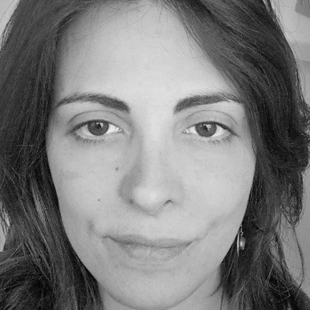
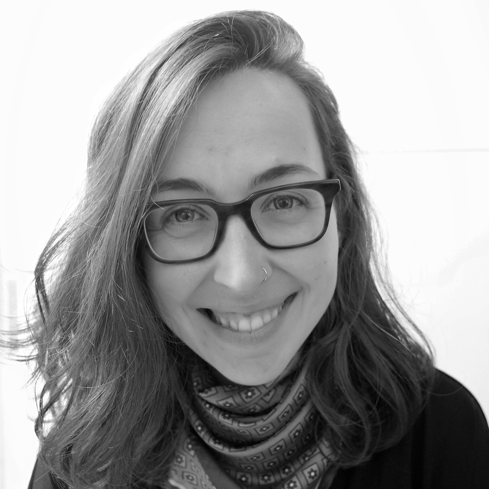
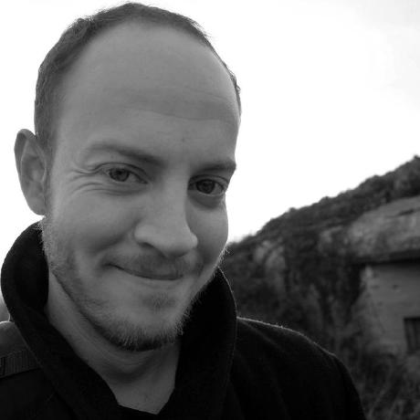
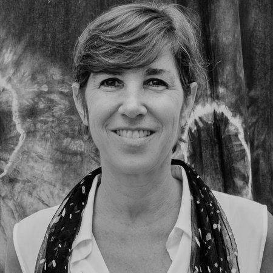
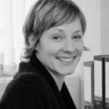
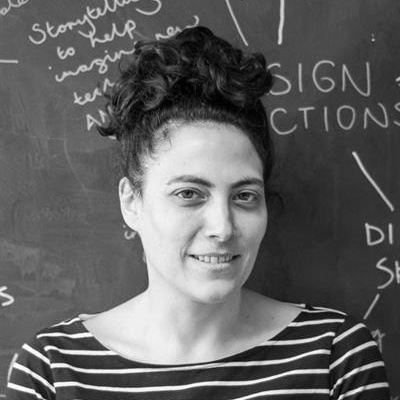
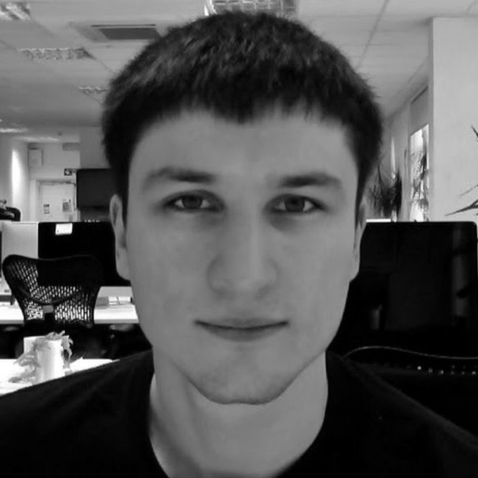

Home Project People Network Contact
People
The VaMM Network and ESRC-funded methods development project is being led by a team of researchers based at University College London’s Institute for Global Health in partnership with a team of Co-Investigators.
Research Team

Ligia Kiss
Principal Investigator
Senior Lecturer
Ligia Kiss is social epidemiologist with expertise in violence, human trafficking and health. Her technical expertise is mainly in complex research designs and especially in the evaluation of complex interventions, and the use of mixed methods in research. Ligia’s current work focusses on methodological innovations for applied research, and on intervention development and evaluation for prevention of labour exploitation and youth violence. In the past twenty years, Ligia has led, designed and implemented numerous research projects in Africa, Latin America, South Asia, Southeast Asia and Europe.

Alys McAlpine
Senior Research Fellow in Migration, Violence, and Complexity
Alys McAlpine is a computational social scientist with expertise in migration, human trafficking, labour exploitation, and conflict-related violence. She has recently completed her PhD at the Gender, Violence and Health Centre (GVHC) at the London School of Hygiene and Tropical Medicine (LSHTM). Her thesis applied social network methods and agent-based modelling to explore migration networks and labour recruitment in the Myanmar-Thailand migration corridor. Alys’ current work focusses on developing and applying computational social science methods for research and intervention development to prevent violence and exploitation. Before her thesis, Alys was a Research Fellow at the GVHC and worked on an evaluation of a GBV case-management intervention in Dadaab refugee camp in Kenya, among other research projects.

Luke Demarest
Research Fellow in Complex Systems Modelling and Information Design
Luke Demarest is a visual artist and researcher based in London. He is a Research Fellow in Complex Systems Modelling and Information Design at University College London and an Associate Lecturer in Graphic Communication Design at Central Saint Martins, UAL. Previously he was a Computational Artist in Residence at the Victoria & Albert Museum and an engineer at Rosetta Stone. Luke’s creative work has been supported by Arts Council England and featured at SIGGRAPH, the Society for Art and Science, and Leonardo. Luke has worked on projects for or funded by the European Social Research Council (ESRC UK), the National Health Service (NHS), the Knight Foundation, and the Embodied Audio Visual Interaction group (EAVI).
Co-Investigators
David Osrin, FRCPCH, is a professor of Global Health at University College London and a Wellcome Senior Research Fellow in clinical science. Based in Mumbai since 2004 in a research partnership with SNEHA, his main interest is in community action to improve the health of women and children in informal settlements. He has worked on participatory community-based interventions to improve maternal and newborn survival, childhood nutrition and immunization, and family planning. His current focus is on the prevention of violence against women and girls, particularly in the urban context.

Cathy Zimmerman is a behavioural and social scientist. She is a founding staff member of the Gender Violence & Health Centre at LSHTM where she is a Professor in Migration, Violence, and Health. Cathy’s research focusses on human trafficking, exploitation and gender-based violence. Cathy and her team have produced policy and service-focused evidence from multiple corners of the world, including Thailand, Vietnam, Cambodia, Nepal, India, Bangladesh, Kazakhstan, Argentina, Peru, Bolivia, Ethiopia, the United Kingdom and multiple European countries. Cathy’s current work focuses on child domestic workers under the MILLBY Research Programme on violence against women and girls in Southeast Asia. Cathy and colleagues recently completed a five-year intervention evaluation, the DFID-funded Study on Work in Freedom Transnational (SWIFT) Evaluation of the International Labour Organization’s “Work in Freedom” programme in South Asia. Cathy also worked in Cambodia from 1993 to 1998 where she established the first local non-governmental organization against domestic violence against women and children.

Corinna Elsenbroiche is a Reader in Computational Modelling at Glasgow University (MRC/CSO Social & Public Health Sciences Unit). Corinna is particularly interested in methodological and epistemological aspects of novel methods, in particular computational methods such as agent-based modelling and social simulation, and has published on aspects of ontology, explanatory power and context validity in modelling. As a computational modeller she has developed models of dynamic social networks of juvenile delinquency, neighbourhood effects of extortion racketeering and collective reasoning in social dilemma situations. She is particularly interested in complexity sensitive social science methods, comprising computational, case based and participatory methods. As a co-investigator in the Centre for Evaluation of Complexity Across the Nexus (CECAN) she is involved with developing these methods in a policy relevant way. She is currently working on how to combine methods through novel research designs.

Maria Dada is a Lecturer in Interaction Design at London College of Communication. Her work is placed within the fields of design, continental philosophy and visual culture. She investigates the role of digital imagery in reconfiguring socio-political institutions and structures. She has degrees in both continental philosophy from the Centre for Research in European Philosophy and Computing and Communication Arts from the Lebanese American University. Maria has exhibited and lectured widely, most recently as a Research Fellow in Visual Cultures at Goldsmiths University, at the Transmediale Festival in Berlin, at Birkbeck’s Film, Language and Culture Studies department and at CRASSH in Cambridge.

Thomas Evans is a Lecturer in Quantitative Methods at The Bartlett’s Centre for Advanced Spatial Analysis at University College London. His current research aims involve the application of game theoretic models to security scenarios with a spatial dimension and of multi-objective optimisation techniques (based on linear and non-linear programming) to problems of land use planning. In spatial contexts, such deterministic optimisation methods can often be naturally combined with simulation-based agent-based modelling approaches to create rich and versatile models of real-world systems, capable of representing complex realities that pure mathematical tools could not tackle effectively in isolation. His research goals are, therefore, to develop new theoretical mathematical tools, building on existing optimisation techniques; to collaborate with experts in other disciplines to apply these tools in new contexts; and to advance the role of agent-based modelling as a companion to spatial optimisation models, to represent complex real-world systems.